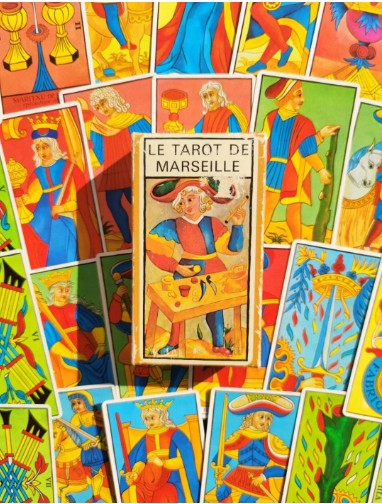

El Tarot de Marsella es mucho más que un simple mazo de cartas. Es una obra de arte, una conexión con las tradiciones ancestrales y una llave a los secretos de lo oculto. Nacido del trabajo de artistas como Nicolas Conver y posteriormente reinterpretado por Paul Marteau en el siglo XX, este mazo mantiene viva la esencia del tarot clásico, mientras evoluciona con los tiempos.
A lo largo de los siglos, el Tarot de Marsella ha experimentado ligeras modificaciones que, aunque sutiles, aportan matices interesantes a las cartas. Desde pequeños cambios como la moneda en lugar de la bellota en LE BATELEUR, hasta la suavización de colores en el trabajo de Fournier, cada versión es una celebración de la historia y la interpretación personal.
Este mazo es una elección perfecta para principiantes que desean conectar con la esencia pura del tarot, pero también es apreciado por tarotistas experimentados que buscan imágenes contemporáneas sin perder la fidelidad a la tradición. El Tarot de Marsella ofrece una experiencia visual enriquecedora, con sus colores vibrantes y símbolos que reflejan tanto lo terrenal como lo espiritual.
Cada carta es una puerta hacia el autodescubrimiento. El rojo y azul de LE CHARIOT, el cabello azul de L'ETOILE y las delicadas variaciones artísticas de cada versión crean un diálogo visual que invita a reflexionar y conectar con tu intuición.
Sumérgete en la sabiduría ancestral del Tarot de Marsella y permite que sus imágenes guíen tu camino.
Agendar Lectura Regresar